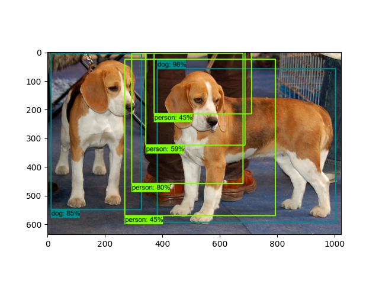
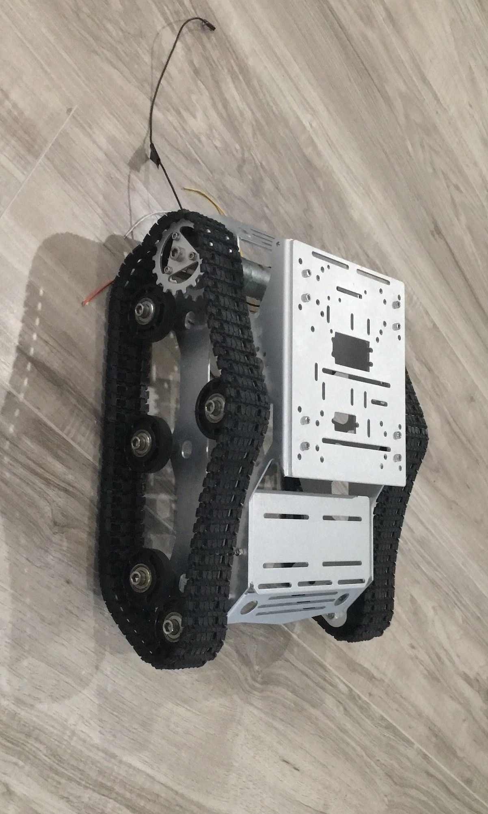
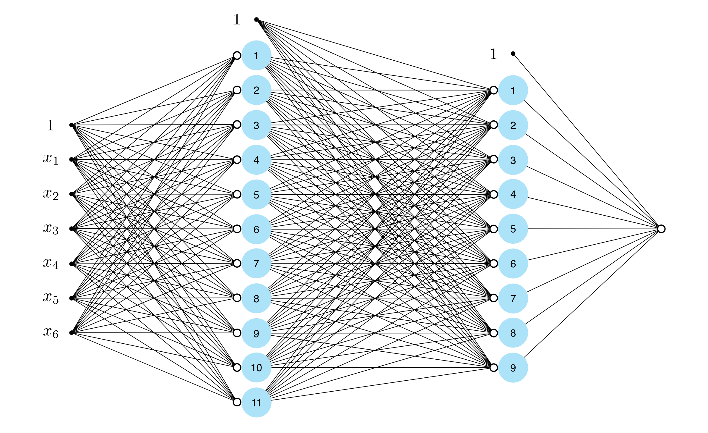
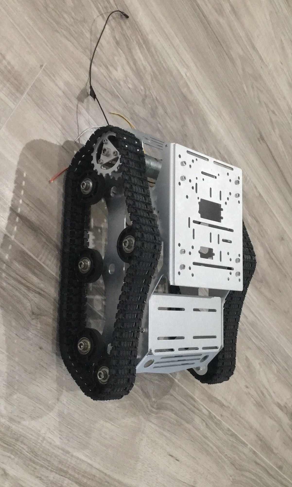
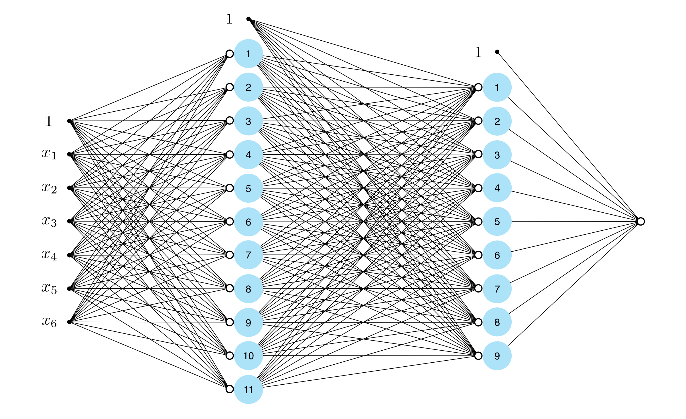

Overview
Purpose
The purpose of this project is to help create a site to house not only my resume, but more information about me in in order to see if I'm the right person for the job. In this website I will be including several different options to not only introduce myself, but hopefully get more accquainted with you.
Within the project page, I would like your input on what you think would be better ideas. I would like your questions as well so I can be helpful to you in your future endeavors. Questions such as: why did you use a Bluetooth server for communication between the phone and robot? Why are you creating your own model for this robot to learn from object detection? Each of these questions will go straight to my email, I will respond as soon as possible.
I’m hoping that this site will be a useful insight to not only my project, and how much progress I currently have, but also something to help judge my character as an applicant under interest. I have a detailed list on my accomplishments, what makes me a good choice in the devOps field, but most importantly I also have a downloadable content section to allow a basic summary if needed.
On my projects page you will notice a project that I have been working on for years. Since I don't want to overwhelm whomever might be interested, I'm going to be breaking this up into parts. These parts will include the title of this part, pictures, detailed descriptions of said part, github links if needed for the code I used, and will also have an option for the person interested in the project to leave questions and comments.
Audience
There are two different groups I’m hoping to come to this site. The first group will be people trying to get a better view on why they would want to hire me. In this regard I have provided information regarding work experience, schooling, projects that I’ve worked on outside of work, and contact information. All this information is going to also be summarized in downloadable content on my main page. The second group will be people that I’m hoping will be interested in the project, this site will let them either contribute or take inspiration from some of the work I’ve accomplished.
This site is interactive and as such does provide ways to contribute to the project I have and respond on this page with questions or suggestions. With this being interactive, I’m also hoping that the users on my main page will also be able to contact me using any of the various methods suggested.
Site Stucture Planning
To toggle my project page’s bits of detailed descriptions up you will be able to move through each one with a button to click next or previous. To make sure that the image won’t take up the entire project page I will also have a “photo” section of these parts of the project. The photo section is going to be to the left of the description of the part. These photos will be able to be seen in one conglomerate with the option to download or view the images individually from this conglomerate.
In the home page it’s going to be more information about me in relation to work. This information will include my resume (A word document), accomplishments, and basic work experience/ accomplishments.
The header is going to include my “logo” that I will use throughout this resume project in the top right corner. This will be colored in the navy blue I’m using and have navigational options to the contact info, project page, and site-plan. At the very top and below the header, I’m hoping to have a picture of me with the basic overview (a paragraph) of a re-iteration of my purpose and the kind of work I’m look for.
Right below the purpose and kind of work I’m looking for, I’m going to add my work experience to the more right – center of the page. This will include the company, type of job, time worked, position if needed, and basic description. To the left of my job descriptions it’s going to be my resume as a downloadable word document. Below my resume I’ll also have a downloadable content as with my experience, accomplishments, and projects I’ve been working on as a word document.
Below my work experience and downloadable content, I’m going to have the subsection that makes up the bottom half area of my page. This subsection will take up the entire width of the page unlike the previous subsection. This will be my schooling that I’ve gotten detailing the experience. It’s also going to have the badges I’ve earned on the site tryhackme.com. As a sidenote, besides the schooling this will all be included in both my resume and experience/accomplishments/projects. The downloadable content will be more summarized.
At the very bottom of my page, or the footer it’s going to be where I put a link to the contact me page. With some basic contact information. The footer is going to include the date edited with my name, number, and apps to reach out to me. These apps are going to be facebook, linkedin, and gmail.
Branding
Website Logo
Color Palette
https://coolors.co/8ecae6-219ebc-023047-7d4600| Primary | Secondary | Accent 1 | Accent 2 |
|---|---|---|---|
| [#929091] | [#219EBC] | [#8ECAE6] | [#7D4600] |
Typography
Heading Font: Roboto
Paragraph Font: Sans Pro
Normal paragraph example
I will be excited to work with you in the future.
Colored paragraph example
I have a lot that I can bring to a company or service that I know can benifit you in the future.
Navigation
Site Map
Content
Home page
About Me
I appreciate you looking at my page, I'm hoping I can answer many of your questions with my site. I think I would make a good canadite because of many different qualities that I possess. Once of the qualities that is essential for a workplace is being able to communicate clearly and well. This is something I have developed with over a decade of customer interactions. With these interactions comes learning from them, and I can confidently say that I've been able to master customer service and communication with peers.
Another quality that I've gained from my many jobs that I've had over the years is my adaptability to various systems and ideas. Throughout my lifetime I've strived to be as moldable as possible in order to become my best self. It's a compliment I've gotten multiple times by multiple people and I'm very proud of it.
Job Experience
IT Service Desk
Brigham Young University Idaho – Rexburg, ID
January 2022 – Present
I assist faculty and students with technology issues. Including downloading applications, password issues, software problems, and other specific university IT issues.
Sales Associate, Technician, and Trouble-shooter
Batteries + Bulbs – Apple Valley
December 2020 to December 2022
Helped customers solve problems and troubleshooting for phones, computers, and cars.
Auto Care Technician
Walmart - Apple Valley, MN
May 2020 to December 2020
Assisted customers with routine automotive maintenance and troubleshooting.
Missionary
Non-profit Church Organization – Des Moines, IA
May 2018 to 2020
Volunteer with food pantries, Good Will, Habitat for Humanity
Learned leadership skills in various positions.
Soccer Referee
EAA, RAA, AND DAKOTA REV - Apple Valley, MN
April 2010 to 2014
I was able to settle disputes, understand and apply rules of MSRC, make quick decisions, and learned to help others with their mistakes and learn from my own.
Outside Of Work Experience
TryHackMe
On this site I was able to learn the basics of hacking, what makes a system vulnerable, OWSAP, and many more in the field of Cyber Security. These are the badges I've earned: (Will place badges later)
Project
Throughout this website you'll see a project page, I'm hoping this demonstrates my self-motivation and commitment. I would really appreciate if you took a look at this part of the page. You can find the link to this on the menu above.
LinkedIn Learning Certificates
These should demonstrate the knowledge I have gained about networking, customer service, and more: (LinkedIn url to Certificates)
Robotic Programmer
I lettered all four years of high school, learned how to program in Java, C#, and Python, worked with a team of programmers, and problem solved different challenges to meet the needs of the robotics challenges.
Education
Bachelors In CIT (In Progress)
Brigham Young University-Idaho - Rexburg, ID
September 2017 to Spring 2024 (Expected Graduation Date)
My Current GPA: 3.0
Unoficiall Transcipt is available in Downloadable Content Section :)
High School Diploma
Eastview Senior High School - Apple Valley, MN
August 2014 to May 2017
Images for the Home page


ProjectPage
Welcome To My Project Page
The main idea of this page is to have you either get insparation from my project, contribute, or satiate your curiosity on the big project I've been working on. Thank you for viewing my project!
The Robot Butler (This will be the first page)
This project has taken years to eventually get where I am right now, but what is this? This robot is going to be the future of technology. This robot will be able to listen to an app for you asking it to do the dishes find where the kitchen is, find where the dishes are, and complete the task almost exactly how a real butler would. Do you want to help make tons of masks for your kid on their birthday while actually spend time with them? The robot has a feature to do custom tasks for you and repeat those tasks. I’m hoping with this technology to accomplish two different tasks. The first task being, to allow people to get to what they want to the most. If you’re like me you understand it’s hard to find a lot of time in the day because of mundane chores, and instead this robot could work on those for you while you go on a hike with your family. The second task I’m hoping to accomplish is to hopefully work on even more fun and experimental technologies in the future. The main idea is to show this to anyone and hopefully either inspire them, or have a mutually beneficial idea of how to improve this design. Thank you for checking out my project!
Vision Code for Robot
This is by far the most complicated part of the robot. Although I only started this a few months ago I’ve made some progress on a pre-generated model that has the resources to identify if you are giving a thumbs up. With this basic understanding of models and a lot of help from a group at BYU-I called AI society I’m getting this done at quicker speeds than originally thought. My main idea for training an automatic and custom model is for the user or anyone working in this project to tell the AI a word. This word will be placed in google search images and the robot will “grab” these images. It will check one by one until it has a basic and good idea of what the word to image comparison are. This will make the least amount of human interaction necessary. I’m hoping in the future this AI will generate ideas of objects itself and have humans check for basic maintenance of said model. The main idea is to study neural networks and specifical convoluted frame networks. Once the robot views objects under multiple frames it can narrow down what this object is.
Robot Chassis Design
The robot chassis (prototype) is going to simply be a tread design of which I’ve already ordered. Treads are the most versatile and cheap to use of most designs. There is a design available from Boston Dynamics that is a chassis comprised of a four-legged animal called spot. This is also around 65,000 dollars which surprisingly is not in budget. In the future I’m hoping to make a similar design but cheaper and most likely not as accurate.
Computers and Networking
The computer I’m using for this is a micro desktop called bee link mini pc. To fit the processing of the AI object detection I’m using a graphics card stander. This allows me to attach a 1080 graphics card to this mini pc and process object detection. What will happen if I don’t use a graphics card with this computer? It will slow down the robot vision to about 8 frames per second making this very inaccurate and most likely barely usable. I’m hoping to create or use a server to communicate with the robot and do the vision object detection training, while on the robot side it will take pictures, map area with ultrasonic sensors, and use object detection when not “learning’. This will create a dynamic where the robot doesn’t need to sit down and process objects for hours in order to do the next tasks. It will simply ask the user for a different task while it’s waiting for the server to upload the information on that object/ task.
Computer Communication Scripts
For the first script that will activate once the user opens the app it will send the appropriate message to the Bluetooth and this will let the computer know to activate a script I made called autoConnect.sh. This will just automatically bind with the Bluetooth connection. This is unfortunately unsecure as this does bypass a security feature in linux and almost every other OS, but I’m not sure how to bind the phone without user interference otherwise. The second script that will run is a python file called BT7.py, this will constantly be asking the user to give this information. It will run in the background in the future to be more automated. So far, I only have a basic code written out to communicate with Arduino (or any other micro controller), but this isn’t very complicated and I will most likely finish this up towards the end of my project.
Connection Activity for App
This activity is the first activity to pull up, even before the main menu. Even though main menu is the hub of options the robot needs to make sure to connect first. In this activity it will search for a Bluetooth connection advertised as Robot. When it finds this sit will ask for the appropriate response back. If it gets this response, it will automatically connect and send you to the next page (main menu). This was the hardest to design visually, this spinning loading animation was worked out with a native loading gif type from android studio, and this would replace that icon with an X or a check mark. This also allows the users to find what they needed for connection.
Main Menu Activity of App
In the main menu I was hoping this would help the user with a guide of options the remote control, chat bot, help page and update page. The buttons each ask for an “intent” of each activity. Once it calls the intent of the activity this will pull into that same activity. The main purpose of this is to act as a hub of options for communication with the robot. In the visual design all the buttons were pulled from native options of android studio.
Remote Activity for App
First in the code it calls the BluetoothConnection Java class. When this is called, it will relate to the robot automatically. With the remote app the buttons simply push commands to the python script running the robot. Most of the work in this aspect was in the design of the app making sure this looked aesthetically pleasing. The buttons were from JPGs I found to create a remote format. I made sure that this was using the constraint layout. This allows the visual design to fit on most if not all screens for android.
Help Activity for App
This was the simplest to design visually and on a more software-oriented side as well. The only purpose of this page is to state common Q and As and eventually have a help line/ chat page. Suggestions would be much appreciated if you think I need to help add more clarity to this app.
Chat Bot Activity for App
This is the busiest and involved for the user, but also hopefully the main use of this app. With this page you can send or receive a message and pictures. The user can take a picture and send this to the robot through Bluetooth this allows the AI to try and understand what the user wants it to interact with. The backend code is a lot more complex this connects automatically with the Bluetooth Connection Java class. When the user takes a picture, it will break this into something called a bitmap and user base 64 to send an encrypted message through Bluetooth. When the robot sends a picture it deciphers this and sends it into a bitmap to display to the user. The messaging works the same, except it doesn’t need to use or finalize using a bitmap. User interface has small updates at the top a text-box and camera to respond and box where pictures the robot sends are received.
Update Activity for App
The Bluetooth server method that I used throughout this project has been the only method that’s worked to connect with a python script. This has one limitation which is it can’t constantly be listening to the client side of the Bluetooth server. To combat this, I’ve made an update page. This will allow the user to investigate past messages that the robot has sent and respond at their earliest convenience. One the update app opens it will ask for all messages these will come pouring from the robot or client side. The visual design is to use the list view native android studio list portion. This allows the user to scroll through the list is it’s too long to fit on the screen.
Bluetooth Connection Java Class for App
This class is the backbone of the entire app, this stores all the methods used to connect, send, and receive information through Bluetooth. This creates a Bluetooth socket which asks for a device Bluetooth address, and a port. With a custom method I’ve created this creates a stable connection and you can send and receive information from this method as well with methods called input and output stream. As mentioned previously this is unfortunately not something that can listen constantly for client side information, to combat this I have made an update page to receive any further updates. If anyone knows something that might be better, I’m absolutely open to ideas
Images for the Page 2
.png) 



ContactPage
About Me
I'm originally from MN, Apple Valley. I really enjoy the outdoors including hiking, swimming, and biking. I'm married to my lovely wife Megan, we've only been together for a year and I'm excited for more years. As you can tell I'm very passionate about my project and I'm hoping that it will create oppurtunity for more projects in the future. My favorite food to make and eat is Cajun Pasta, if you don't know what that is and are currently living in Rexburg I'd be very excited to show you. Currently I am living in Rexburg, and if you are as well (or near) and would prefer to meet in person I would be more than willing to do that as well, so long as it's neither of the McDonalds in Town.
Contact Methods:
Although it is best practice to text, call, or email. I will be as quick as I can, and respond to any of these other methods. Thank you!
Images for the Page 3


Wireframes
Home

Personal Projects

Contact Page